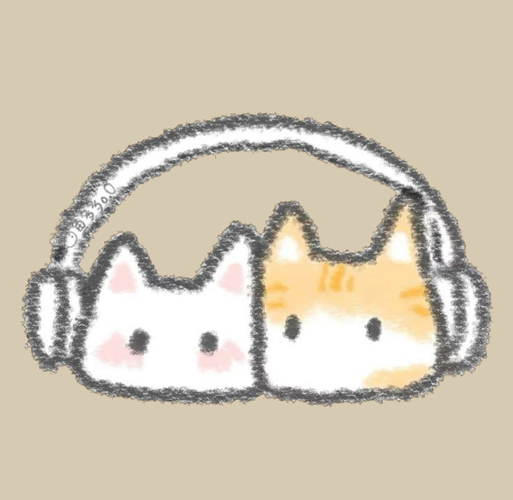
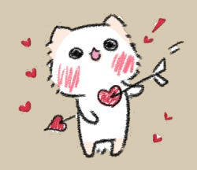

18.10.26 <3
Hola amor, Como estas? Llevo un ratito hacienda esto, no es tan elaborado pero es una pequeña convinacion de dos cosas que me gustan mucho esta carta queda plasmada de mucho senitmiento y de tantas cosas que quiero decirte, me encantas llevo 4 meses viviendo a tu lado y han sido dias muy lindos y tan llenos de amor y encanto no puedo creer que hayas estado tan cerca de mi
Han sido varios dias los que he pensado en que tan cerca estabas de mi y del porque nunca me acerque, miedo quiza, todos mis dias pienso en ti estar contigo compartiendo mi vida, detalles pequeños, salidas y cosas que quiero hacer contigo, disfrutando de nosotros, hay cosas que me han llevado a pensar una cosa hizimos una conexion tan rapida que la vida nos hizo plenos, no fue solo la conexion casi inmediata, conocernos mutuamente, compartir y vivir tanto es una cosa tan marvillosa y que jamas cambiaria por nada del mundo, Disfruto que estes en mi vida

Amo que seas tan comprensiva que tengas un entendimiento del mundo y que seas tan creativa e imaginativa, eres una persona maravillosa que merece todo en la vida y que quiero tener por siepre y hasta en fin de mis dias en mi vida, Eres parte de mi corazon adoro como eres y sobre todo que te amo, eres lo mas valioso que tengo y que tengo en mi vida, Eres el amor de mi vida en este y en todas las realidades, Te amo >⩊<
